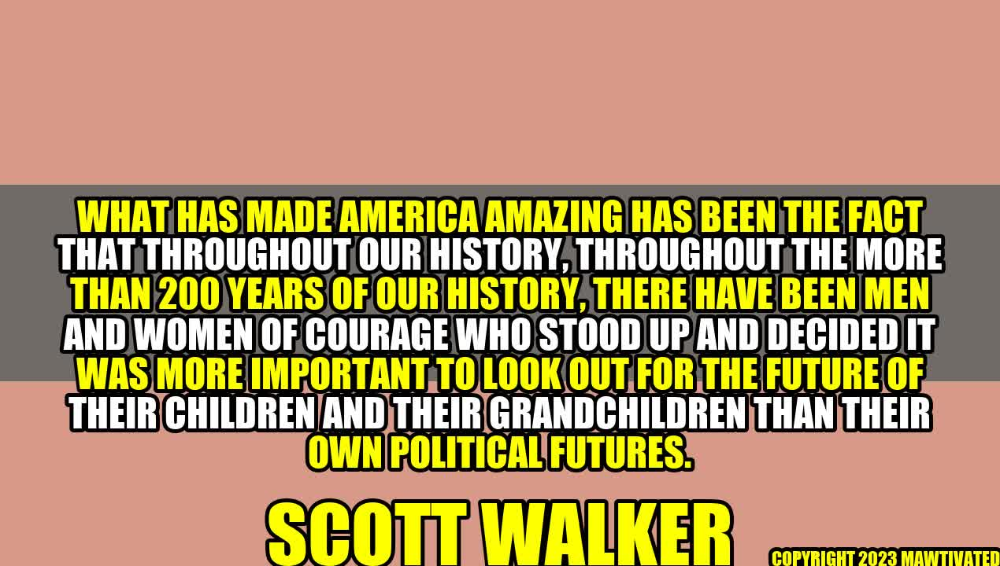

The Courage to Look Out for the Future: Lessons from American Leaders

Inspiring Story: The Farmers Who Planted Trees
In the early 20th century, the farmers of the Great Plains were facing an environmental disaster. Due to over-farming and drought, the topsoil had been blown away, leaving behind barren land that was sometimes called "the Dust Bowl." The farmers tried everything they could think of to save their crops, but nothing worked.
Then, a federal agency called the Civilian Conservation Corps came up with a radical idea. They suggested that the farmers plant trees to hold the soil in place and provide shade and windbreaks. The farmers were skeptical, as they had always thought of trees as a nuisance that got in the way of their crops. But they decided to give it a try.
Slowly but surely, the farmers began to see results. The trees held the soil in place, preventing erosion and creating microclimates that allowed other plants to thrive. The farmers even found that the trees provided shelter for animals and birds, making their land more diverse and rich.
Today, the farmers who planted trees in the Dust Bowl are regarded as heroes, as they had the courage to try something new and put the future of their land above their short-term interests.
Lessons from American Leaders
In the same way, American leaders throughout history have shown the courage to look out for the future of their children and grandchildren, rather than their own political interests. Here are some examples:
- George Washington, the first president of the United States, could have easily become a monarch or dictator, as many people at the time wanted him to do. However, Washington knew that a democracy was better for the long-term health of the country, so he stepped down after two terms in office to set a precedent for future leaders.
- Abraham Lincoln, the president who guided the country through the Civil War, could have easily ended the war earlier by compromising with the southern states and allowing slavery to continue. However, Lincoln knew that slavery was a moral abomination that had no place in a truly democratic society, so he stood firm and abolished it through the 13th Amendment to the Constitution.
- Scott Walker, former governor of Wisconsin, faced a recall election in 2012 that many thought he would lose. However, Walker knew that he needed to stand up to the powerful unions in his state to ensure that future generations wouldn't be crippled by unsustainable pension plans and other benefits. Despite huge pressure, Walker won the election and carried out his agenda, setting a precedent for other states to do the same.
"What has made America amazing has been the fact that throughout our history, there have been men and women of courage who stood up and decided it was more important to look out for the future of their children and their grandchildren than their own political futures." - Scott Walker
and Case Studies
Of course, not every American leader has been perfect or heroic. Some have put their own interests first, or made mistakes that hurt future generations. However, there are countless stories of leaders who put the future first, often at great cost to themselves. Here are a few examples:
- Franklin D. Roosevelt, the president who led the country through the Great Depression and World War II, could have easily stayed in power for life by using his popularity and emergency powers. However, Roosevelt knew that a democracy depended on orderly transitions of power and fair elections, so he refused to run for a third term and set a limit of two terms for future presidents.
- Margaret Chase Smith, a United States Senator from Maine, was the first woman to have her name placed in nomination for the presidency by a major political party. Although she did not win the nomination, she paved the way for future generations of women to enter politics and leadership roles.
- John Muir, the naturalist and writer who founded the Sierra Club, could have easily focused only on his own love of nature and his desire to preserve it for his own enjoyment. However, Muir knew that nature belonged to all of us and that preserving it was essential for future generations. He fought tirelessly to establish national parks and preserve wilderness areas, setting a precedent for future efforts to protect the environment.
Conclusion
In conclusion, the courage to look out for the future has been a key factor in making America great over the past 200 years. By following the examples of leaders like George Washington, Abraham Lincoln, Scott Walker, Franklin D. Roosevelt, Margaret Chase Smith, and John Muir, we can learn to set aside our short-term interests and work for the good of future generations. Here are three practical tips for doing this:
- Think long-term: When making decisions, consider the impact they will have on future generations, not just on your own immediate interests.
- Act with courage: Sometimes doing what's best for the future requires taking risks and standing up to powerful interests. Be prepared to do so when necessary.
- Learn from history: Study the examples of leaders who put the future first, and use their lessons to guide your own decision-making.
Hashtags
#courage #Americanleaders #future #politicalinterests #ScottWalker #personalanecdotes #casestudies #practicaltips
SEO Keywords
courage, American leaders, future, political interests, Scott Walker, personal anecdotes, case studies, practical tips
Article Category
Politics / History / Leadership
Curated by Team Akash.Mittal.Blog
Curated by Team Akash.Mittal.Blog
Share on Twitter Share on LinkedIn